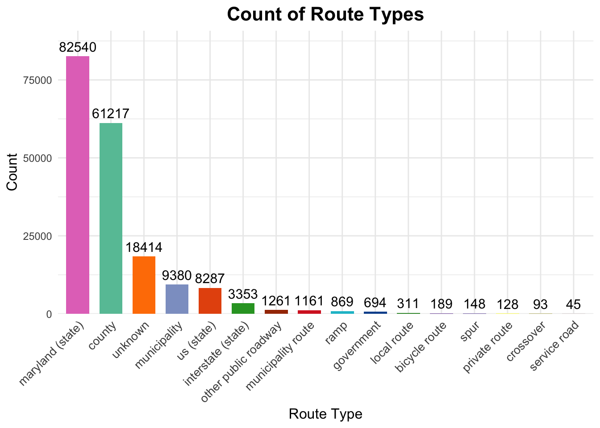
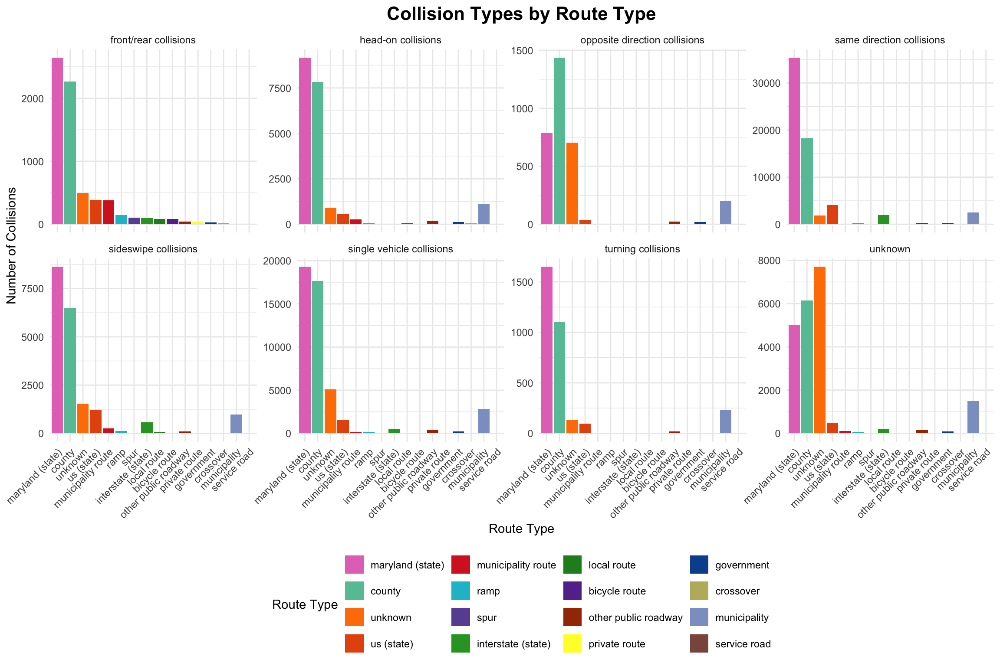
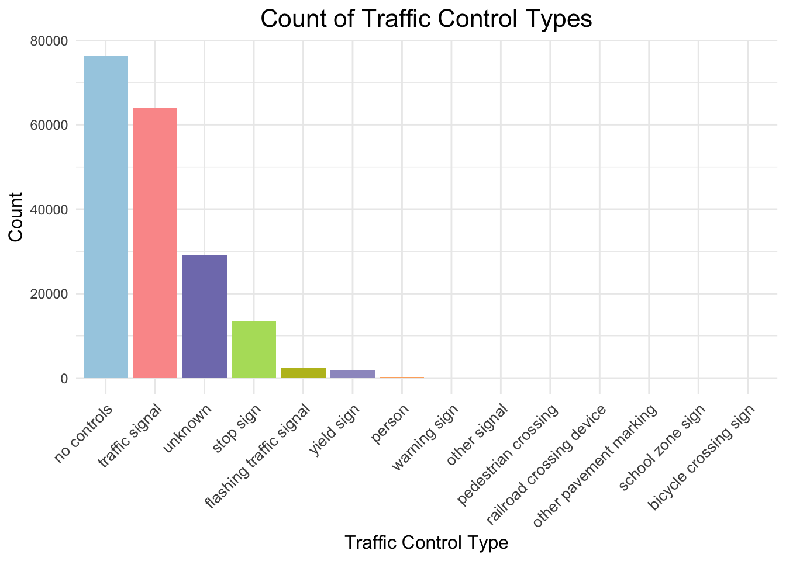
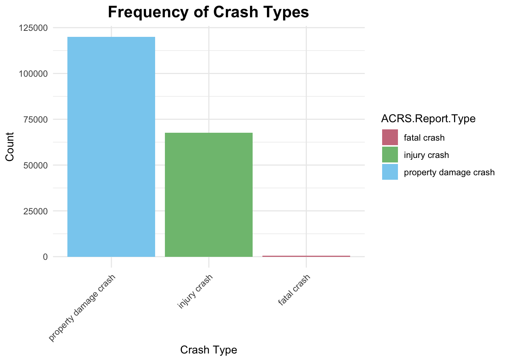

To start, we explore the overall distribution of collision types to understand the major categories of traffic incidents. This foundational view helps us identify which types of collisions are most prevalent.
Code
# Bar Plot (Frequency of Collision Types)# Custom color schemecolors_for_collisions <-c("same direction collisions"="#E41A1C", # Red"single vehicle collisions"="#377EB8", # Blue"head-on collisions"="#4DAF4A", # Green"sideswipe collisions"="#984EA3", # Purple"unknown"="#FF7F00", # Orange"front/rear collisions"="#FFFF33", # Yellow"turning collisions"="#A65628", # Brown"opposite direction collisions"="#F781BF"# Pink)# Group and count the Collision.Type valuescollision_counts <- car_crash |>group_by(Collision.Type) |>summarise(Count =n())# Create the bar graph with the custom color schemeggplot(collision_counts, aes(x =reorder(Collision.Type, -Count), y = Count, fill = Collision.Type)) +geom_bar(stat ="identity", show.legend =FALSE) +scale_fill_manual(values = colors_for_collisions) +labs(title ="Count of Collision Types",x ="Collision Type",y ="Count" ) +theme_minimal() +theme(axis.text.x =element_text(angle =45, hjust =1),plot.title =element_text(hjust =0.5, size =16) )
This bar chart displays the counts of different collision types in the dataset. The most frequent collision type is same direction collisions, followed by single vehicle collisions. Less common types include turning collisions, front/rear collisions and opposite direction collisions. A notable portion of collisions is categorized as unknown, which may require further investigation or clarification. This distribution highlights that many crashes involve vehicles traveling in the same direction, emphasizing potential issues such as tailgating or lane changes.
Next, we examine the types of routes where these collisions occur most frequently. By linking collision types to specific route categories, we gain insights into the environments contributing to these incidents.
Code
# Bar Plot (Frequency of Route Types)crash2_data <-read.csv("crash2.csv")crash2_summary <- crash2_data %>%filter(Light %in%c("daylight", "dark lights on", "dark no lights", "dusk", "dawn")) %>%# Select relevant light conditionscount(Light, ACRS.Report.Type) # Count occurrences by light and report type# Define custom color schemecolors_for_route_type <-c("unknown"="#FF7F00", # Orange"maryland (state)"="#E377C2", # Yellow"county"="#66C2A5", # Teal"municipality"="#8DA0CB", # Mauve"interstate (state)"="#2CA02C", # Dark Green"us (state)"="#E6550D", # Burnt Orange"other public roadway"="#A63603", # Brick Red"government"="#08519C", # Navy Blue"ramp"="#17BECF", # Dark Cyan"service road"="#8C564B", # Maroon"municipality route"="#D62728", # Magenta"spur"="#6A51A3", # Slate Blue"local route"="#228B22", # Forest Green"bicycle route"="#663399", # Dark Purple"private route"="#FFFF33", # Bright Pink"crossover"="#BDB76B"# Dark Yellow)# Count occurrences of each Route.Type in crash2_dataroute_counts <- crash2_data %>%group_by(Route.Type) %>%summarise(Count =n()) %>%arrange(desc(Count))# Create the bar graph with custom color schemeggplot(route_counts, aes(x =reorder(Route.Type, -Count), y = Count, fill = Route.Type)) +geom_bar(stat ="identity", show.legend =FALSE, width =0.7) +# Narrow bars for better distinctiongeom_text(aes(label = Count), vjust =-0.5, size =4, color ="black") +# Add labels on top of each barlabs(title ="Count of Route Types",x ="Route Type",y ="Count" ) +scale_y_continuous(expand =c(0, 0), limits =c(0, max(route_counts$Count) *1.1)) +# Add space for labelsscale_fill_manual(values = colors_for_route_type) +# Use custom colorstheme_minimal() +theme(axis.text.x =element_text(angle =45, hjust =1, size =10), # Rotate x-axis labelsplot.title =element_text(size =16, hjust =0.5, face ="bold"),axis.title =element_text(size =12) )

This bar chart illustrates the distribution of traffic collisions across different route types. The most common route types are Maryland (state) and county roads, which together account for a majority of the reported collisions. Unknown route types also make up a significant portion, indicating missing or unclear data. Other route types, such as municipality roads, US (state) roads, and interstate highways, have lower counts but still contribute meaningfully to the overall distribution. These findings highlight that state and county roads are the primary locations for traffic incidents, emphasizing the importance of focusing safety measures and traffic management efforts on these areas.
To combine these insights, we explore how specific collision types vary across different route types. This visualization reveals patterns unique to certain routes, such as the dominance of ‘single vehicle collisions’ on rural roads or ‘front/rear collisions’ on urban streets.
Code
# Bar Plot (Collision Types faceted by Route Type)# Define updated custom color schemecolors_for_route_type <-c("unknown"="#FF7F00", # Orange"maryland (state)"="#E377C2", # Bright Pink"county"="#66C2A5", # Teal"municipality"="#8DA0CB", # Mauve"interstate (state)"="#2CA02C", # Dark Green"us (state)"="#E6550D", # Burnt Orange"other public roadway"="#A63603", # Brick Red"government"="#08519C", # Navy Blue"ramp"="#17BECF", # Dark Cyan"service road"="#8C564B", # Maroon"municipality route"="#D62728", # Magenta"spur"="#6A51A3", # Slate Blue"local route"="#228B22", # Forest Green"bicycle route"="#663399", # Dark Purple"private route"="#FFFF33", # Yellow"crossover"="#BDB76B"# Dark Yellow)# Prepare data, sort Route.Type by Collision.Count in descending order within each Collision.Typecollision_summary <- car_crash |>filter(!is.na(Route.Type), !is.na(Collision.Type)) |>group_by(Route.Type, Collision.Type) |>summarize(Collision.Count =n(), .groups ='drop') |>arrange(Collision.Type, desc(Collision.Count))# Reorder Route.Type within each Collision.Typecollision_summary$Route.Type <-factor(collision_summary$Route.Type, levels =unique(collision_summary$Route.Type))# Create the plotggplot(collision_summary, aes(x = Route.Type, y = Collision.Count, fill = Route.Type)) +geom_bar(stat ="identity", position ="dodge") +labs(title ="Collision Types by Route Type",x ="Route Type",y ="Number of Collisions",fill ="Route Type" ) +scale_fill_manual(values = colors_for_route_type) +# Use the custom color schemetheme_minimal() +theme(axis.text.x =element_text(angle =45, hjust =1),legend.position ="bottom",plot.title =element_text(hjust =0.5, size =14, face ="bold") ) +facet_wrap(~ Collision.Type, scales ="free_y", ncol =4)

The Maryland (state) category and county category exhibit the highest number of collisions across nearly all types, including single vehicle collisions, head-on collisions, and same direction collisions, suggesting that local roads are particularly prone to accidents. This pattern may result from higher traffic volumes, frequent stops, or more complex navigation on local roads. County roads also account for a significant number of collisions, especially single vehicle collisions and same direction collisions, though the majority of collisions still occur on local routes. Notably, opposite direction collisions are predominantly observed on county routes, which are often characterized by two-lane undivided structures and higher speed limits, increasing the risk of head-on crashes. This emphasizes the need for targeted safety measures such as centerline rumble strips, enhanced signage, and improved road design to reduce risks on county roads. Collisions under the “unknown” category are disproportionately high on unknown route types, suggesting potential issues in data collection or reporting that could hinder the accurate analysis of trends. In contrast, bicycle routes, spurs, service roads, and private roads report the lowest collision counts, likely reflecting lower usage or dedicated infrastructure for these road types. These findings highlight the importance of prioritizing safety interventions and infrastructure improvements, particularly on local and county roads where collisions are most prevalent.
3.2 The Role of Traffic Controls
Traffic control systems play a crucial role in managing safety on the road. Here, we analyze the distribution of traffic controls across incidents to understand their presence or absence in various collision scenarios.
Code
# Bar Plot (Frequency of Traffic Control Types)car_crash <-read.csv("/Users/helenwang/Desktop/5702 final proj/crash2.csv")# Count occurrences of each Traffic.Controltraffic_control_counts <- car_crash |>group_by(Traffic.Control) |>summarise(Count =n()) |>arrange(desc(Count))colors_for_traffic_control <-c("no controls"="#A6CEE3", "traffic signal"="#FB9A99", "unknown"="#807DBA", "stop sign"="#B3DE69", "flashing traffic signal"="#BCBD22","yield sign"="#9E9AC8", "person"="#FDAE6B", "warning sign"="#31A354", "other signal"="#9C9EDE", "pedestrian crossing"="#F768A1", "railroad crossing device"="#F7FB6B","other pavement marking"="#7FCDBB", "school zone sign"="#B2DF9A", "bicycle crossing sign"="#969696")# Create the bar graphggplot(traffic_control_counts, aes(x =reorder(Traffic.Control, -Count), y = Count, fill = Traffic.Control)) +geom_bar(stat ="identity", show.legend =FALSE) +scale_fill_manual(values = colors_for_traffic_control) +labs(title ="Count of Traffic Control Types",x ="Traffic Control Type",y ="Count" ) +theme_minimal() +theme(axis.text.x =element_text(angle =45, hjust =1, size =10), # Rotate x-axis labelsplot.title =element_text(size =16, hjust =0.5),axis.title =element_text(size =12) )

The bar chart reveals that most crashes occurred in areas with no traffic controls, highlighting a significant safety concern. Traffic signals are the second common incidents, indicating that while they regulate traffic, they remain accident-prone due to possible human or mechanical errors. Stop signs also contributed to crashes but at a much lower frequency. Other measures, such as flashing signals and yield signs, showed minimal crash counts, suggesting either limited usage or greater effectiveness. This analysis emphasizes the need for enhanced safety measures, especially in uncontrolled areas, to reduce accidents and improve road safety for all users.
Before analyzing the influence of traffic controls on crash outcomes, we take a closer look at the overall distribution of crash types. This provides essential context for understanding how different crash severities are impacted by traffic management.
Code
# Bar Plot (Frequency of Car Crash Types)car_crash_counts <- car_crash |>group_by(ACRS.Report.Type) |>summarise(Count =n()) |>arrange(desc(Count))colors_for_crash_type <-c("fatal crash"="#CC7A8B","injury crash"="#7FBF7F", "property damage crash"="#89CFF0")ggplot(car_crash_counts, aes(x =reorder(ACRS.Report.Type, -Count), y = Count, fill = ACRS.Report.Type)) +geom_bar(stat ="identity") +scale_fill_manual(values = colors_for_crash_type) +labs(title ="Frequency of Crash Types",x ="Crash Type",y ="Count" ) +theme_minimal() +theme(axis.text.x =element_text(angle =45, hjust =1))

This bar plot visualizes the distribution of crash types in the dataset, categorized into three main types: property damage crashes, injury crashes, and fatal crashes. The plot reveals that property damage crashes are the most frequent, significantly outnumbering the other two types. Injury crashes are the second most common, while fatal crashes occur relatively infrequently. The stark difference in counts highlights the prevalence of less severe accidents compared to life-threatening or fatal incidents. This foundational analysis provides critical context for further exploration into the factors that influence crash severity.
To evaluate the effectiveness of traffic controls, we explore their relationship with crash severity. This mosaic plot highlights how the presence of stop signs or traffic signals correlates with fewer severe crashes.